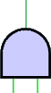
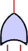
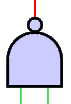
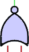
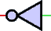

AND Gate:
Output turns Green when both
inputs are Green.

OR Gate:
Output turns Red when both
inputs are Red.

NAND Gate:
Output turns Red when both
inputs are Green.

NOR Gate:
Output turns Green when both
inputs are Red.

INVERT Gate:
Inverts Red/Green signals.